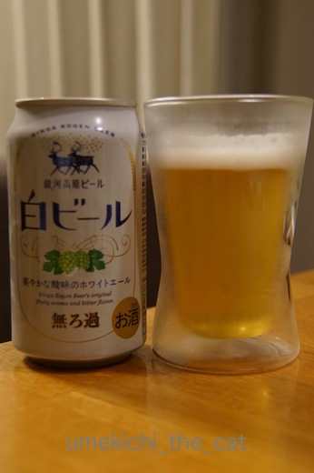
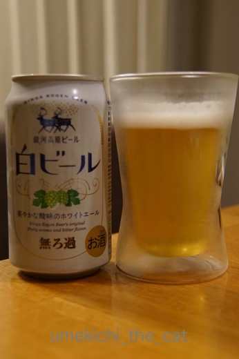

一般論では語れない [梅吉]
先日見たネットニュース。
「猫はどうして無表情なの？」の見出しにえ〜〜〜〜〜っ！！！！！
なんでも猫には人間・犬に比べて表情筋が少ないのだとか。
（犬には人間に近いくらいの数の表情筋があるそうですよ。）
ヒモの先につけたモール一つでこんなに色々な表情を見せてくれるのに。
表情筋少ないかな〜〜〜
群れで暮らす犬と違って単独で行動する猫はあまり自分の感情を表に出す必要がないのだとか。
我が家は二人と一匹の群れ行動。
すぐ鼻ちゅーして来る飼い主に「なにするんじゃ！」と怒ってみたり
「ごはんくださいにゃ![[黒ハート]](https://blog.ss-blog.jp/_images_e/136.gif) 」とおねだりしてみたり
」とおねだりしてみたり
鬼の形相で怒るおかーさんを「けへへへっ」と小バカにして笑ってみたり。
梅吉さんは感情を表現する必要が沢山あるものね。
表情筋、発達した？

こんな表情から

あら怖い。
ネットニュースの最後、
「複雑な人間関係に疲れている現代人は猫の無表情に癒されるのかも。」
と結んでありましたが
おかーさんは梅吉さんのくるくるよく変わる表情に癒されてますよ。
 ↑ガブッと一押し↑
↑ガブッと一押し↑
あちこちのメーカーから出てくる春ビール。
週末飲んだ中ではこれが一番気に入りました。

前からあったのかもしれませんが今春見つけたので春ビール認定。
「猫はどうして無表情なの？」の見出しにえ〜〜〜〜〜っ！！！！！
なんでも猫には人間・犬に比べて表情筋が少ないのだとか。
（犬には人間に近いくらいの数の表情筋があるそうですよ。）
ヒモの先につけたモール一つでこんなに色々な表情を見せてくれるのに。
表情筋少ないかな〜〜〜
群れで暮らす犬と違って単独で行動する猫はあまり自分の感情を表に出す必要がないのだとか。
我が家は二人と一匹の群れ行動。
すぐ鼻ちゅーして来る飼い主に「なにするんじゃ！」と怒ってみたり
「ごはんくださいにゃ
鬼の形相で怒るおかーさんを「けへへへっ」と小バカにして笑ってみたり。
梅吉さんは感情を表現する必要が沢山あるものね。
表情筋、発達した？

こんな表情から

あら怖い。
ネットニュースの最後、
「複雑な人間関係に疲れている現代人は猫の無表情に癒されるのかも。」
と結んでありましたが
おかーさんは梅吉さんのくるくるよく変わる表情に癒されてますよ。
あちこちのメーカーから出てくる春ビール。
週末飲んだ中ではこれが一番気に入りました。

前からあったのかもしれませんが今春見つけたので春ビール認定。
2017-04-03 07:39
nice!(36)
コメント(17)

カフェオレ色の梅吉

梅吉 2023年8月10日 永眠


梅吉と出会った譲渡会

犬猫の理由なき殺処分ゼロ
妄想広告
UMEKICHI 光

爆発的に早い！
時々攻撃的！
Thanks to Mr.Boss365
爆発的に早い！
時々攻撃的！
Thanks to Mr.Boss365

人間と暮らしてる猫は
ぜったい表情筋発達してるよねー！
だって表情がころころ変わるよねー^^
わたしもくるくるよく変わる表情に癒されてる派です♪
by リュカ (2017-04-03 10:24)
表情筋がないのと表情がないのは違いますよね。
記事を書いた人は猫飼いじゃないと思う。
お目目だけでありとあらゆる感情を表現してるし。
by zombiekong (2017-04-03 12:19)
ネコが無表情・・・？そうじゃないですよね～顔見たら怒ってるとか喜んでるとか分かるんだけどな～(>_<) あ、でも今日のうちのマンガ 無表情のナノが登場します！←さりげなく宣伝♡
by palpal (2017-04-03 15:11)
ニャンコちゃんは無表情・・・
私には理解出来ませんね～(笑)
嬉しい時・怒りたい時・のんびりしたい時とかの
表情は違いを感じる私です。
梅吉さんのオメメだって眉間まだ変化が見れますよね～（〃∩ω∩〃）
by makkun (2017-04-03 15:55)
飼い主さんの表情が移っていくのではありませんか？
タップリの愛情ある表情で見ていると、
自然とニャンさんも表情が出てくると思います。
ニャンさんはよく考えている賢い目をしていますよね。
by kiki (2017-04-03 16:24)
同感ずら！
と思わず静岡弁が出てしまうほどですにゃ。
猫はとっても表情豊かですよ。
この間は「まろん、本当はしゃべれるんやろ？誰にも言わんからしゃべってごらん」といったら怪訝そうにしていましたよ。やっぱ中身がばれたらまずいらしい。（＾＾）
by じゅらまろ (2017-04-03 17:48)
表情筋…ヒトもあんまり使わないと衰えてきそうです(怖いわー
猫の顔を見ながら変顔してたら、不審そうな顔をされました。
猫の顔の表情は犬ほど変わらないのかもしれませんが(うちの犬はそんなに顔に出るタイプじゃなかったような…)、猫は顔だけじゃなく全身から感情が出まくってる気がします。
by BillK-ko (2017-04-03 17:55)
何を要求しているのか
眼差しでわかっちゃうんですよねェ。。。^^;
by yes_hama (2017-04-03 21:00)
梅吉さん元気かしら…？(´`:)
と気になって、ドコノコから流れてきました(^^)
猫だって表情豊かですよねぇ。微笑んだり、しょんぼりしたり、わくわくしたり(ΦωΦ)♪
また時々覗かせていただきます(ゝω・)
by あんこ玉 (2017-04-03 21:43)
猫が無表情！？？？？？？？？？？？？
訪問させていただく猫ブログで無表情な猫さんに会ったことないんですけど^^;
全身で感情表現するので顔だけ切り取ったら動きは小さいのかもしれませんが、怒るしグレるし拗ねるし喜ぶしくるくる表情変わりますよね♪
「猫ってどうしてこんなに表情豊かなの？」というネットニュース流しましょう(^_-)-☆
by ゆきち (2017-04-03 21:50)
猫って思いっきり表情豊かですよねぇ( ^ω^ )
でも確かに一般論的には「無表情だし、甘えないし」って言われてるようですが、
きっとニャンコさんと暮らしたことのない方が入ってるんでしょうねぇ(*_*)
うちのニャンズのかみさんに対する甘え方なんて本当にどの子も「超マザコン」ですw
by ニッキー (2017-04-03 22:05)
猫は表情が乏しいというのは、猫を飼ったことがないのに解剖学だけ勉強した頭でっかちな学者様でしょう、きっと。
by 粋田化石 (2017-04-03 22:06)
あんこ玉さん＞わ〜！あんこ玉さんだ、あんこちゃんだ！！
探してきてくれたなんて嬉しいです。ありがとうございます。
ドコノコ、ちょっと離れて投稿しづらくなってしまって・・・^^;
私も梅吉もとっても元気です。
梅吉はダイエットをして現在4480ｇ、スリムになったんですよぉ（＾◇＾）
紙袋の罠にはまったあんこちゃんは相変わらずきゅるるんお目目で
お元気そう！
今日のお顔は「困っちゃったわ・・・わたし・・・」で表情豊か！
ブログでは制約が少ない分より梅吉を楽しんでいただけるかと思います。
時々遊びに来てくださいませ。待ってま〜す(ﾉ≧▽≦)ﾉ
リュカさん＞うみちゃんもあおくんもとっても表情豊かだよね〜。
うみちゃんのむくれ顔なんてストレートな感情表現で天下一品可愛いし、
あおくんの流し目からの〜キメ顔！なんて、
表情筋の発達している人間男子だってなかなか出来ませぬ・・・
人間男子、あおくんから教えを請うべきだわww
(人間男子から流し目されてもうわっ！さむっ！！だけどね＾＾）
zombiekongさん＞さすが猫飼いの先輩で多頭飼いの師でいらっしゃる！
「表情筋がないのと表情がないのは違う」なんて端的な指摘。
ニュース記事は（監修 ホニャララ動物クリニック 医師）だったのですが
牛馬専門とか！？
猫の診察経験少ないでしょう〜と思わせる記述でした。
palpalさん＞おお(・o・)タイミングよく無表情のナノくん！
旦那さんの（ここ重要！）Gパンから出られなくなった時は
無表情以外に自分の置かれた状況を表す表情がないと思われます。
無表情のナノくん最高だったもの〜(*≧ｍ≦*)
makkunさん＞わんこ飼いの方からの援護射撃、なんと心強い・・・
加えて梅吉の眉間の表情を読んでいただけるとはうれしいなぁ♪
眉間の皺一つで表情がガラリと変わります。
眉間で語る漢、梅吉です(^_-)-☆
by ちぃ (2017-04-04 16:49)
kikiさん＞確かに。
梅吉の怒った顔は般若の面か鬼の面かという表情なんですが・・・
私だ！私！！(≧▽≦)私の表情が移りました！！！(ﾉ≧▽≦)ﾉ
なんだか梅吉とより親密になった気が致します・・・
またまた、確かに。
梅吉は賢い目をして浴室のカランの押し下げ方、
ゴミ箱の開け方をじ〜っと見ています。そしてイタズラを・・・(꒦ິ⌑꒦ີ)
じゅらまろさん＞そうずら、そうずら！
まろたんも顔で目で語るにゃんこですよね〜。
写真でもまろたんの思っていること分かるもの（え？思い込み？
「しゃべれるんやろ？」って言われてまろたんぎくっとしただろうなぁ。
きっと肉球が汗ばんでいたはずよ（＾◇＾）
BillK-koさん＞衰えてくる表情筋を鍛えようと思って梅吉を見ながら
変顔百面相していたらねこぱんちが飛んで来ました。
爪出てなくてよかった・・・・(⌒-⌒; )
全身から溢れ出る感情、舞台俳優みたいじゃない？
梅吉は顔をつくれるから歌舞伎がいいかも〜Ｏ(≧▽≦)Ｏ
yes_hamaさん＞そうです！そして眼差し一つで下僕を操る・・・
これがどうして無表情といえましょうか！！
by ちぃ (2017-04-04 17:18)
ゆきちさん＞私が目にしたニュースは獣医さんが監修していたのですが・・・
日々診察に来るにゃんこさん達から浴びせられる
「あんたのこと好きやないねん」というジト目を無表情と受け取っているのかも(⌒-⌒; )
百面相王のこてつくんの画像をお借りしてまとめサイトに
「猫ってどうしてこんなに表情豊かなの？」って投稿しちゃおうかしら〜（＾◇＾）
梅吉もちょこっと登場！。
ニッキーさん＞一般論で動物は、特に、にゃんこは語れませんよね。
目線ひとつで下僕を操る技、私も身につけてみたいものです（＾◇＾）
４ニャンズさんを虜にするゴッドマザー様の技も・・・・
あ、こればっかりは「魅力」だから無理ですね〜(꒦ິ⌑꒦ີ)
粋田化石さん＞そうそう、学者的な机の上のお話だな〜って思いました。
それに猫への愛も足りないわ！
by ちぃ (2017-04-04 18:24)
まったくにゃんこのことを知らない人の書いたニュースだにゃ。
流行のフェイクニュース・・？
それとも、
４月１日のニュース・・？
にゃんこは、かわいいお顔、してくれますよね。
by らしゅえいむ (2017-04-04 18:38)
らしゅえいむさん＞コメントありがとうございます♪
あぁ・・・？私、だまされた？だまされたのかも〜( ꒪⌓꒪)
にゃんこ好きが格段に増えた昨今、ちゃんとわかっている方の方が多いですよね！！
by ちぃ (2017-04-04 19:42)